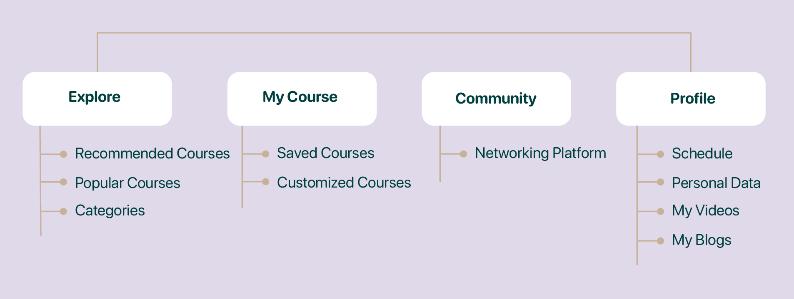
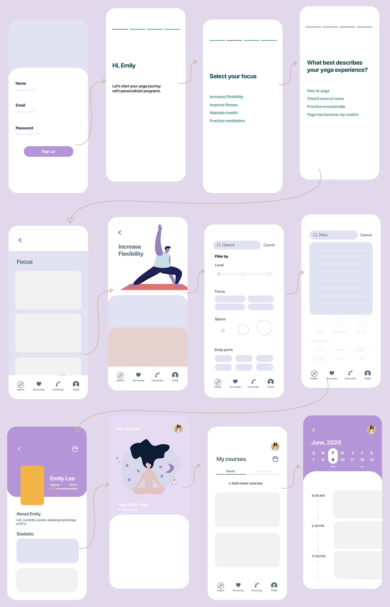

1 Introduction
Yoga is not merely a form of exercise for the body. It is a pathway towards peacefulness that enhances self-awareness. The recent pandemic set a path to explore new online teaching and learning opportunities. An increasingly recognized approach that has great potential in improving remote learning is mobile augmented reality (MAR) apps. This project analyzes the effectiveness of augmented reality (AR) in educational settings and evaluates how MAR can be applied to existing yoga apps. We came up with Y360, an AR yoga app that provides 360° video courses, enabling new immersive experiences for yoga practitioners. We also performed usability testing on Y360 to evaluate the effectiveness of our mobile application and improved on our product through the feedback and suggestions provided by users.
Problem Space and Goals
Attending classes at yoga studios has become a trend as its environment helps with group healing and support. However, the recent pandemic has changed the way people learn yoga: the majority of people choose to practice yoga at home rather than attending classes physically. Challenges of learning yoga remotely arises with this transition and is exemplified in the absence of interaction and feedback between learners and instructors. This may lead to the lack of motivation to complete the workout and increases the risk of yoga-related injuries. Y360 aims to address these challenges by introducing an interactive learning environment and personalized training courses through employing action-recognition systems in MAR.
2 Data Collection and Analysis
User Interview
In order to better understand our target users and address their pain points, we conducted semi-interviews with five students
from National Taiwan University who have been practicing yoga consistently for more than a year.
We focused on questions about their experiences, needs and expectations of yoga practices.
It is shown that yoga practitioners expect
an engaging environment where they can interact with yoga instructors and their peers. Their main pain points include lack of customized learning and personal space.
To address these user needs, we proposed 4 guidelines for our product design to create and enhance a learning environment for yoga practitioners by:
- providing sufficient and clear demonstrations and verbal instructions
- giving real-time feedback and correcting errors
- allowing users to create yoga sequences based on learners’ own preferences
- creating a platform where learners are able to share their learning experiences
User Persona
Based on our understanding of our target users, we created a persona that guides our ideation process.
Gender: Female
Age: 21 years old
Occupation: Student
introverted · passionate · detail-oriented
About Emily
Emily is a junior undergraduate student. She is a beginner in yoga and is dedicated to making yoga a habit. She attended yoga classes a few times but didn’t feel comfortable practicing with strangers around her. Besides, she lives 40-minutes away from the city center where the training center is located. Commuting between her home and the training center is time-consuming for her. She also has a tight schedule and having a heavy course load is stressful so she needs effective ways to relieve stress.
Goals
- create a strong foundation through focusing on basic poses
- practice yoga at home and at her own pace
- manage time and money more effectively
- keep a consistent workout schedule
Pain Points
- time and money constraints
- commuting problems
- feelings of anxiety in crowded places
- difficulties keeping up with the class
Motivation
- 360° instructional videos: enhance learning through the use of multiple perspective
- customized courses: create courses based on users preference and current yoga experience
- communication platforms: connect with other yoga enthusiasts
- motion detection: receive feedback for improvements
3 Develop and Design
Product Positioning
Before diving into the design process, we conducted a competitive analysis to gain a better understanding of the market environment we are operating in. We looked into two types of competitive forces, including yoga apps and a virtual reality yoga game and identified two main areas that have the potential for improvements: personalized courses and a holistic view of yoga positions. First, some products only provide limited courses that restrict user choices. We aim to provide both pre-designed courses and customized courses for users to plan their workout. Moreover, most videos in yoga applications only offer side and front views of instructors demonstrating poses. We hope to integrate AR technology to create an immersive experience where users can explore yoga poses further through rotating and zooming 360° interactive videos. Finally, it is our focus to improve the real-time feedback system so that users can reflect on their performance and improve in the next classroom.
Prototyping
Low-Fidelity Prototype Design
Based on user research and competitive analysis, we prioritize our feature set to include Explore, My Courses, My Profile, and Community sections. With these features, we used sketching techniques to design a better user experience (UX).
Interaction Map

Perliminary User Flow

High-Fidelity Prototype Design
High-Fidelity Prototype Design
To add personality to our product and connect with users, we used UX writing to craft the text copies that appear throughout the interface of our prototype.
On-boarding
We give users the options to set preferences for content and training levels, and also allow users to set daily reminders. This on-boarding process sets the tone for a flexible and customizable yoga journey.
Explore
In addition to recommended courses, users are encouraged to discover the latest yoga trends. Users can also browse additional courses using search and advanced filtering features which allows them to find suitable courses based on their choices of level, focus, space, and positions.


Course Videos
Boasts audio and visual instructions would guide users through poses step by step. Users can turn on their camera, using real-time visual feedback to learn and optimize poses by comparing their postures with the optimal position. We also provide audio feedback that corrects users movements. Instant feedback allows users to have interactive experiences like they do at a real-life studio and reduces the risk of injury caused by incorrect postures. By rotating the view of the instructor in the 360° videos, users are able to master their skills by studying our instructional library of poses and have a comprehensive view from multiple perspectives.
My Courses and My Profile
Users are able to build a library of yoga videos that they like to create personalized training experiences. We encourage users to set reminders and alerts for upcoming schedules and we also help users keep records of their practices. We designed a platform where users are able to stay connected with other learners. This direct connection enables users to share their experiences with other learners and exchange peer feedback.
Usability Testing
We performed usability testing on our Y360 prototype to learn more about user behavior and preferences, and identify problems in the design of the product.
Through our observations, we understand that participants were able to explore most of the application features before reading the instructions. For instance, they discovered features of selecting course levels, turned on audio instructions, and created personal training programs. One participant suggested a new sharing feature that allows users to share their yoga practicing videos on social media and connect their schedule to other calendar apps on their smartphones.
Some of the participants expressed reservations about online courses as they are not as rigorous as traditional face-to-face courses. One participant showed concerns about not having enough distance in their rooms to practice yoga which could negatively affect the use of the recording feature.
Perliminary Evaluation
The results showed that while users discovered and enjoyed features of Y360, there are needs for more customized features and courses to make the app more user-friendly. A preliminary evaluation with points of improvements are put forward to enhance UX:
-
Feature Activation:
To address the problem of users not being able to discover features of the product, we recommend improving feature activation in ways of making on-boarding contextual, segmenting users personalized messaging, and announcing new features. -
A Multi-platform Connection:
To improve data integration, we suggest a multi-platform connection that enables users to merge their yoga schedule into their existing calendars and sync reminders on their digital devices. Building connections that help make the link between Y360 and social media effective is also a point of improvement. This includes expanding sharing options to offer an engaging community through Instagram, Facebook, and Snapchat, etc. -
Alternative Yoga Poses:
Helping users overcome learning barriers is important as some yoga poses are too difficult to do. We suggest adding a bonus feature that offers modified poses for beginner yoga students in preparation for advanced poses. Besides, it is noted that some yoga poses are challenging in a small space. To address this, providing yoga posture alternatives when the space is limited will be helpful for users. -
Advanced Audio Instructions:
As some of the participants looked for more rigorous training to achieve their personal goals, we recommend providing additional audio instructions that give more details on how to correct and improve positioning. Besides, it is also suggested that a list of recommended courses is provided at the end of every course to guide users on the video courses to watch next.
4 Conclusion and Future Work
In this p, we looked at the challenges of online yoga learning, such as the lack of social interaction and motivation, and highlighted the mental well-being of the general population during the COVID-19 pandemic. We created Y360, a yoga mobile application that integrates AR technology, providing an interactive and immersive learning environment. Y360 provides three core features: (1) a collection of 360° video courses; (2) an automatic detection and recognition of practitioner actions; and (3) audio instructions and real-time feedback. Our findings suggest that AR enhances remote learning as it facilitates human interactions. The combination of interactivity and engagement could enhance the ability of learners to remember what they’ve learned and offer new opportunities for interpersonal connections. High-quality UX in yoga apps is associated with personalized training and interactive audio instructions. Personalized training allows users to go in depth on specific poses and focus on personal goals, while interactive audio instructions are essential for recreating the intimacy of in-person classes and avoiding yoga-related injuries.
However, our prototype has its own limitations. According to usability testing, it would be helpful to create additional features to make the mobile application more user-friendly. It will be important that the future work investigates ways to ensure a personalized and flexible experience for users, from on-boarding to choosing video courses to receiving feedback. Moreover, as we mainly focused on the user interface design of our prototype, there is room for improving the technical design, especially the integration of AR and mobile applications. We hope our work can inspire researchers and designers to create more effective tools to make AR in apps more inclusive. In particular, we encourage future work on designing and evaluating techniques that enable users to enjoy AR within a small physical space.
References
Chen, Y. & Zhang, J. (2011). Discussion on the Benefits and Injuries of Yoga. Chinese Journal. of Physical Education, 24(2), 38-47.
Jien, Y. (2008). Research on Yoga Consumer Behavior and Service Demand in Taipei City. (Unpublished master's thesis). National Taiwan Normal University Sports and Leisure Management Institute, Taipei.
Kesim, M., & Ozarslan, Y. (2012). Augmented reality in education: current technologies and the potential for education. Procedia - Social and Behavioral Sciences, 47, 297-302.
Kiyokawa, K., Billinghurst, M., Hayes, S. E., Gupta, A., Sannohe, Y., & Kato, H. (2002). Communication. Behaviors of Co-Located Users in Collaborative AR Interfaces. Proceedings. International Symposium on Mixed and Augmented Reality, 139-148. doi: 10.1109/ISMAR.2002.1115083
Loia, V., & Orciuoli, F. (2019). ICTs for exercise and sport science: focus on augmented. reality. Journal of Physical Education and Sport, 19(5), 1740-1747. doi: 10.7752/jpes.2019.s5254
Luo, F. (2011). The Relationship Between the Degree of Professionalization of Yoga. Participants and Their Motivation and Obstacles to Participation. (Unpublished master's thesis). Asia University, Taichung.
Michalsen, A., Grossman, P., Acil, A., Langhorst, J., Lüdtke, R., Esch, T. Stefano, G. B., & Dobos, G. J. (2005). Rapid stress reduction and anxiolysis among distressed women as a consequence of a three-month intensive yoga program. Medical Science Monitor, 11(12), 555-561.
Shriram K. V., Vivek, C. & Srivathsan, S. (2015). An Intelligent Boxing Application through Augmented. Reality for Two users – Human Computer Interaction Attempt. Indian Journal of Science and Technology, 8(34), 1-7. doi: 10.17485/ijst/2015/v8i34/73731
Yovcheva, Z., Buhalis, D., & Gatzidis, C. (2012). Overview of Smartphone Augmented Reality. Applications for Tourism. e-Review of Tourism Research, 10(2), 63-66.
Zhuang, Y. (2009). Playing Sport, Practicing Yoga and Doing Gender: Gender Practices of Male Yoga. Participants. (Unpublished master's thesis). National Taiwan University, Taipei.